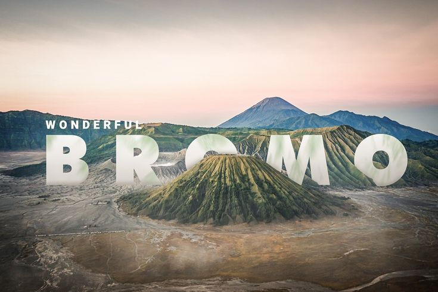
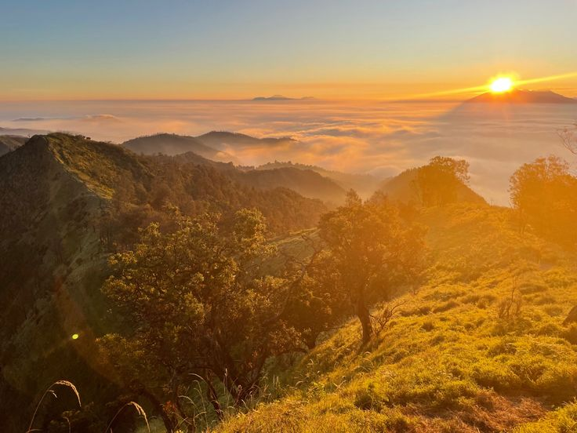
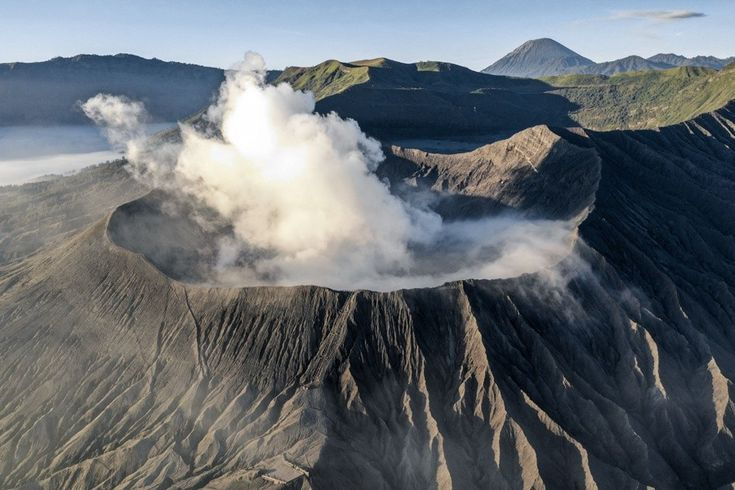

Wisata Gunung Bromo

Gunung Bromo adalah salah satu gunung berapi paling terkenal di Indonesia yang terletak di dalam kawasan Taman Nasional Bromo Tengger Semeru (TNBTS), Jawa Timur. Memiliki ketinggian 2.329 meter di atas permukaan laut, Gunung Bromo menyajikan pemandangan alam spektakuler berupa kaldera luas, lautan pasir berbisik, serta hamparan savana hijau.
Selain daya tarik alamnya, Bromo juga kaya akan nilai budaya dan spiritual. Gunung ini disucikan oleh masyarakat Suku Tengger yang mendiami kawasan sekitar. Setiap tahun, diadakan upacara adat Yadnya Kasada di mana warga lokal melemparkan hasil bumi dan ternak ke dalam kawah Bromo sebagai wujud rasa syukur kepada sang Pencipta.
Galeri Foto Destinasi


Daftar Aktivitas Populer
- Menyaksikan Golden Sunrise: Menikmati pemandangan matahari terbit terbaik dari Puncak Penanjakan 1 atau King Kong Hill.
- Petualangan Jeep 4x4: Bertualang menjelajahi hamparan lautan pasir (Pasir Berbisik) menggunakan kendaraan jip off-road.
Informasi Lokasi
Kawasan Taman Nasional Bromo Tengger SemeruTerletak di 4 wilayah kabupaten: Probolinggo, Pasuruan, Malang, dan Lumajang.
Jawa Timur, Indonesia.
Akses Transportasi:
- Via Probolinggo (Pintu Masuk Cemorolawang): Jalur paling populer dengan akses jalan yang relatif rata dan lengkap dengan penginapan.
- Via Pasuruan (Pintu Masuk Wonokitri): Rute terdekat jika berangkat dari arah Kota Surabaya.
- Via Malang (Pintu Masuk Tumpang): Menawarkan pemandangan langsung melintasi padang savana Bromo.
Tabel Informasi Tarif & Ketentuan
| Kategori Wisatawan | Tarif Hari Kerja (Weekday) | Tarif Hari Libur (Weekend) | Jam Operasional |
|---|---|---|---|
| Kendaraan Roda 4 (Jeep) | Rp 100.000 / unit | Rp 100.000 / unit | 24 Jam |
| Kendaraan Roda 2 (Sepeda Motor) | Rp 10.000 / unit | Rp 10.000 / unit | 24 Jam |
Dokumentasi Multimedia
Video Keindahan Bromo
Tonton Video Singkat berikut: